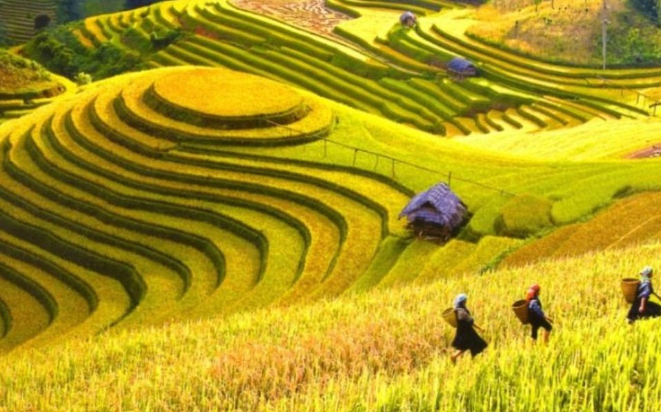
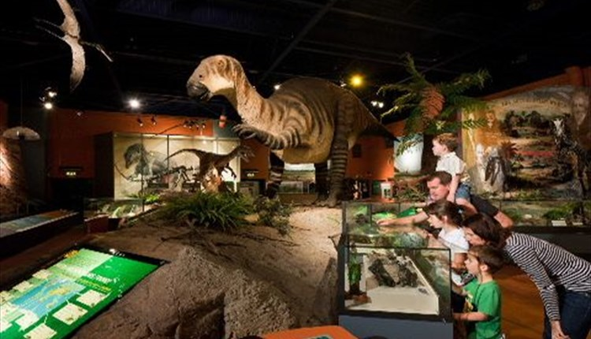
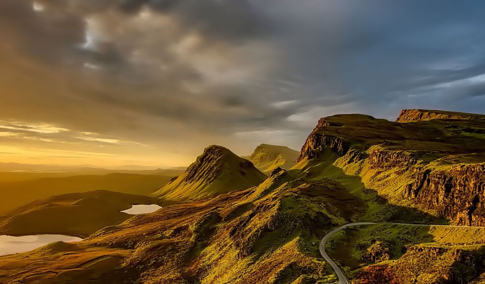
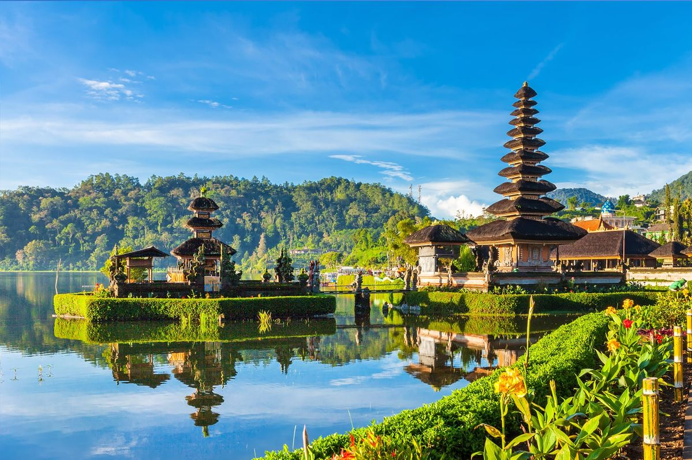

Bienvenue !
Notre site de voyage vous invite à découvrir des expériences uniques,
de l'ambiance spirituelle de Bali à l'effervescence du Vietnam,
en passant par le charme tranquille de l'Île de Wight et la nature sauvage d'Écosse.
Nous vous offrons des aventures authentiques, conçues pour les esprits curieux et les amoureux de la nature.

Le Vietnam, entre tradition et modernité : Plongez au cœur d'un pays fascinant où se mêlent l'agitation des villes historiques,
la splendeur intemporelle de la Baie d'Ha Long
et la quiétude des rizières du Mékong. Le Vietnam est un voyage culinaire et humain, riche en émotions et en rencontres inoubliables.

L'Île de Wight, le joyau caché de l'Angleterre : Changez de décor avec l'Île de Wight, un havre de paix côtier. Ses falaises blanches,
ses plages dorées et ses villages pittoresques en font la destination parfaite pour une escapade relaxante, pleine de charme et d'authenticité britannique.

L'Écosse sauvage, royaume de la faune : Pour les amoureux de la nature,
l'Écosse offre une expérience inégalable.
Partez à la découverte de ses lochs mystérieux et de ses highlands imposants ;
pour observer des espèces emblématiques comme le cerf, le macareux et peut-être même les majestueux aigles royaux.

Bali, l'Île des Dieux : Laissez-vous enchanter par les rizières en terrasses
qui caressent le ciel, les volcans majestueux et l'hospitalité
d'une culture profondément spirituelle. Bali est une invitation à la sérénité,
au bien-être et à la découverte d'une nature luxuriante et vibrante.